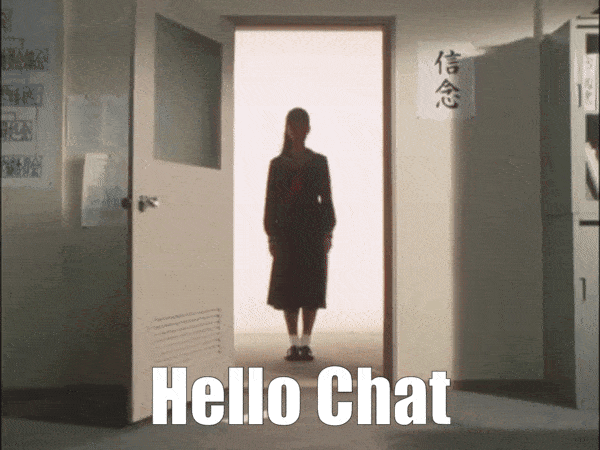

Currently thinking about...
the snakes infiltrate
Welcome!
hiii ^^! My name's Katie, and welcome to my safe and cozy lil' corner of the web!! I thought it would be cool to make a website as a fun little side project (social media sucks lol), and seeing other peoples' personal websites has been very inspirational.
My plan is for this site to act as a sort of hub for whatever I'm doing, keeping everything in one nice place. I also wanna talk about all the things I find interesting! Feel free to explore!
(Also, just so you know, this site was made with a desktop browser in mind. It still works on mobile, but don't be surprised if there are issues that way.)
Proudly hosted on Neocities with absolutely no AI generated content.

Latest "Blog" Posts
These are the most recent posts I've written. You can see more by going to the Blog page in the navbar!
To-do
- add some more/newer graphics to the site. this includes redoing the backgrounds
- improve the mobile experience a bit. or maybe just make it clearer that this site is
meant for desktop lol
Friends
AegSite - Conlangs and super cool photography! There's a new featured photo every month (and it always works on mobile)
Latest site updates
May 2026
I've made a ton of changes, mostly to my script that generates pages, so if I want to
make changes, it will be much easier for me to do so. I've also made some tweaks
to the navigation bar, which now features a submenu! I have not tested how
well this works on mobile, yet. In other news:
The guestbook has been migrated to this site!
I added a page for Heaven Studio remixes
August 2025
I've added a page for Vanadius: Anniversary Edition as well as a Vanadius version archive page. I'm thinking about redesigning this site, so that might happen in the next few months.
November 2024
After a pretty long break, I've made a ton of changes! Most notably, the games page has been
completely
redone! There are individual pages for every game now. There is also more than one blog post now!!
I've
also made changes to several small things throughout the site :3
I'm gonna try to start working on the site more (real), because I really do like it at this point.
Older Updates
Older site updates are kept safe here!
:3